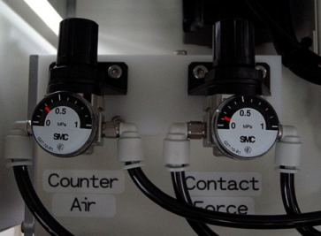

Warranty Parts Requisition Record
Reference No: S0344
Customer: Silicon Laboratries International Pte Ltd
Handler Model: NS-7000
Handler S/N: 18732
Mfg: Mar 2004
Controller: RC520 (Old type CPU board, Network Adapter: Realtek RTL8139)
MMI ver: 1.1c4 (SPEL CT 2.81b) later stage upgrade to 1.1c8 due to PG problem
Date: 22 Dec 2008
Item requested: Index Arm Vacuum Unit (Qty: 2pcs)
Part Code: R35N700001500 (specification: ZX100-Q45M0-PBC-X406)
Symptom
Vacuum unit leakage causes device drop error for Index Arm 1-A and 2-A.
Although the Index Counter Air regulator can be adjusted, but the analog needle display cannot move to indicated the actual air pressure that was being regulated.

Action
After replaced, the Index vacuum units for Index Arm 1-A & 2-A, the analog needle able to point to the actual amount of air being regulated.
Remarks
Model : NS-7000
Serial: 18732
MFG: Mar 2004
PC-686BX (PC)-LV PIII 850MHz
Factory : EPSON-M
SCR version : src 1.1c4
MMI version : MMI 1.1c4
Spel version: Spel CT 2.81b
Product key : MY6VW-JHB2Q-FRD28-DMK4K-66QFT
CU S/N : 01-01379
DUBOX 010 S/N: 230176 NF
Other issues
1. Found out Empty Tray Arm SQ126 Hand up sensor i/o was connected wrongly at Tray IN input module. During start, handler gave Empty Tray Arm hand up error. Rectified.
2. Input Hands often have open/close error
-During homing, Empty Tray Arm Hand up error although it was already up and physical sensor lights on. Check SPEL CT Input Bit 126 Tray Sup did not turn on(error:Hand-up sensor (SQ126) doesn’t turn ON). Found I/O module connector to TRAY IN Module was connector to the wrong port,.Connector to IN126 and able to home.
-At Loading using Reverse Z pickup, Input Hand A suppose to close in +X direction but it only close a few cm and cause device pickup not at center or device pickup error(either pickup at empty pocket or in between pocket divider). Remove covers for input arm, Home handler found motor for open/close vibrating with noise and also the timing belts vibrating. Resit connector for open/close motor, able to home. Hand A pickup device without problem when covers for input pickup arm not covered.
- At Index Arm 1-A, sometimes device drop after plunge down into socket guide plate. Contactor's pickup head cannot spring back, clean spring & plunger and apply grease on o-ring. Grounding wires it's cable lug may have caused the open/close of Hands.